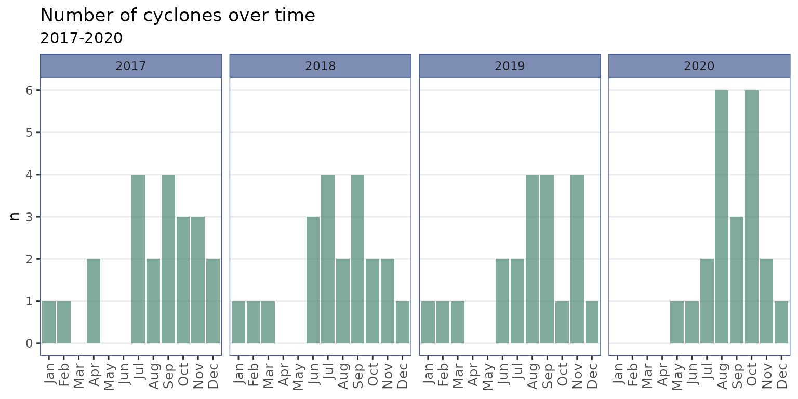
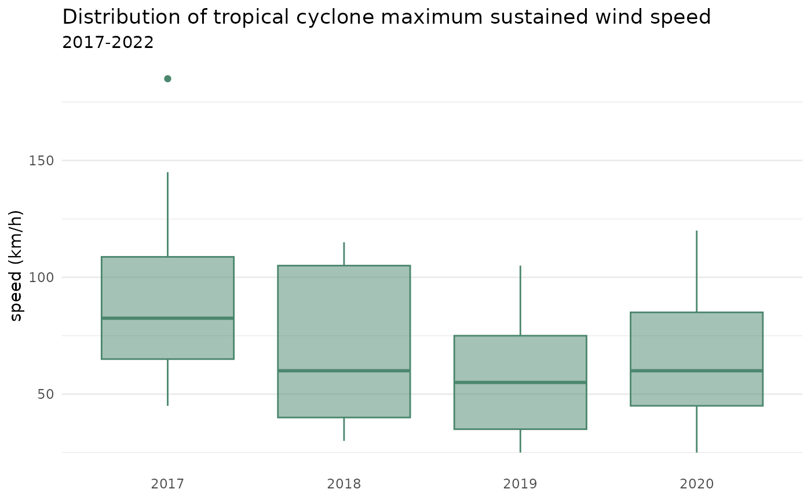
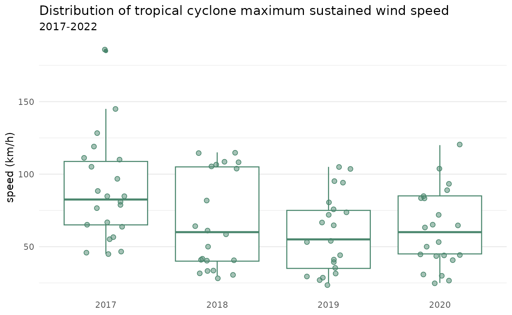
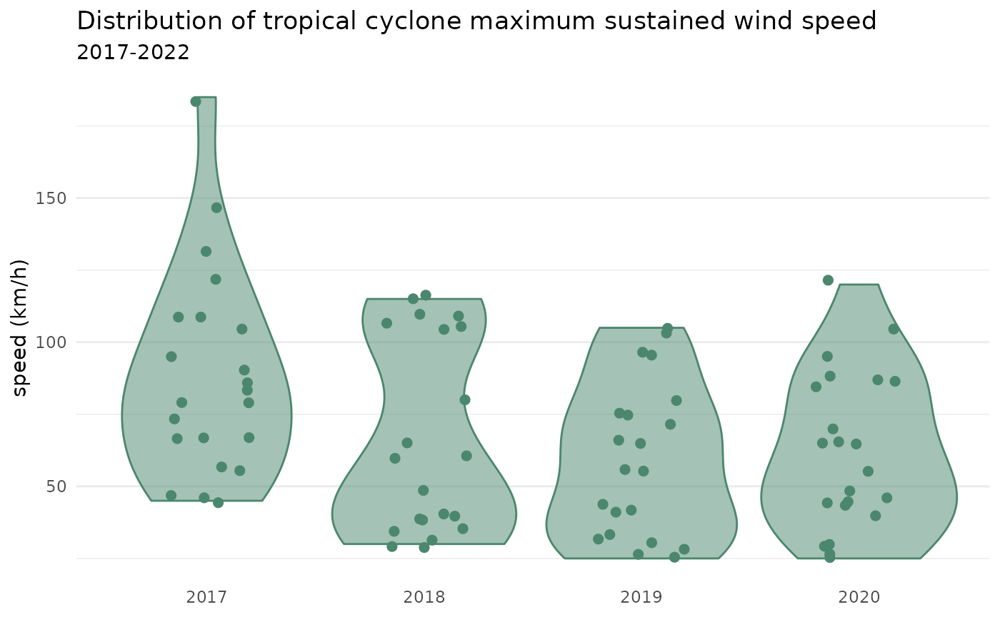

The bagyo package contains the cyclones
dataset. This dataset was taken from annual reports on Philippine
tropical cyclones prepared and released by PAGASA at its website
in PDF format.
Because the reports are in PDF format and the information described
above are in tables within the documents, scripts for scraping the
desired data were developed and implemented to arrive at the
cyclones dataset. The data scraping script can be viewed here.
The following information is available from the dataset:
| Variable | Description |
|---|---|
| year | Year |
| category_code | Tropical cyclone category code |
| category_name | Tropical cyclone category name |
| name | Name given to the tropical cyclone by Philippine authorities |
| rsmc_name | Name given to the tropical cyclone by the Regional Specialized Meteorological Centre (RSMC) |
| start | Date and time at which cyclone enters Philippine area of responsibility (PAR) |
| end | Date and time at which cyclone leaves Philippine area of responsibility (PAR) |
| pressure | Maximum central pressure in hPa |
| speed | Maximum sustained wind speed in km/h |
This metadata can be viewed in R through a call to
?cyclones in the R console.
Whilst tropical cyclones have affected the Philippines far earlier than 2017 and more currently than 2020, official and publicly available data for the information described above is only available in the reports for years 2017 to 2020. Earlier documents of this annual reporting pre-2017 have been produced but are not available on the PAGASA website. These reports of the tropical cyclone season (re-started in 2019) are published within two years after the termination of the season. Hence, the most recent report is only up to 2020 for now.
It is expected that reports for 2021 onwards will continue to be
published and made available by PAGASA. As such, the bagyo
package and the cyclones dataset within it will be updated
accordingly. Continued efforts are also being taken to find sources of
information for years preceding 2017.
This introductory vignette documents the utility of the
cyclones dataset in the bagyo package in
general statistics and data science teaching and for software
documentation and testing.
Data wrangling
Following are some highlight examples of how the
cyclones dataset can be used to demonstrate various data
wrangling approaches, particularly those using the
tidyverse packages.
Creating summaries
library(dplyr)
library(tidyr)
## Get number of cyclone categories per year ----
cyclones |>
group_by(year, category_name) |>
count() |>
group_by(year) |>
complete(category_name) |>
ungroup()
#> # A tibble: 20 × 3
#> year category_name n
#> <dbl> <fct> <int>
#> 1 2017 Tropical Depression 5
#> 2 2017 Tropical Storm 9
#> 3 2017 Severe Tropical Storm 5
#> 4 2017 Typhoon 3
#> 5 2017 Super Typhoon NA
#> 6 2018 Tropical Depression 4
#> 7 2018 Tropical Storm 7
#> 8 2018 Severe Tropical Storm 4
#> 9 2018 Typhoon 6
#> 10 2018 Super Typhoon NA
#> 11 2019 Tropical Depression 8
#> 12 2019 Tropical Storm 2
#> 13 2019 Severe Tropical Storm 3
#> 14 2019 Typhoon 8
#> 15 2019 Super Typhoon NA
#> 16 2020 Tropical Depression 6
#> 17 2020 Tropical Storm 7
#> 18 2020 Severe Tropical Storm 3
#> 19 2020 Typhoon 4
#> 20 2020 Super Typhoon 2
## Get yearly mean cyclone pressure and speed ----
cyclones |>
group_by(year) |>
summarise(mean_pressure = mean(pressure), mean_speed = mean(speed))
#> # A tibble: 4 × 3
#> year mean_pressure mean_speed
#> <dbl> <dbl> <dbl>
#> 1 2017 986. 88.0
#> 2 2018 961. 66.7
#> 3 2019 976. 59.0
#> 4 2020 973. 62.0
## Get cyclone category mean pressure and speed ----
cyclones |>
group_by(category_name) |>
summarise(
n = n(),
mean_pressure = mean(pressure),
mean_speed = mean(speed)
)
#> # A tibble: 5 × 4
#> category_name n mean_pressure mean_speed
#> <fct> <int> <dbl> <dbl>
#> 1 Tropical Depression 23 996. 39.8
#> 2 Tropical Storm 25 986. 61.6
#> 3 Severe Tropical Storm 15 978. 75
#> 4 Typhoon 21 941. 102.
#> 5 Super Typhoon 2 908. 112.Working with date and time data
library(lubridate)
## Get cyclone category mean duration (in hours) ----
cyclones |>
mutate(duration = end - start) |>
group_by(category_name) |>
summarise(mean_duration = mean(duration))
#> # A tibble: 5 × 2
#> category_name mean_duration
#> <fct> <drtn>
#> 1 Tropical Depression 46.69565 hours
#> 2 Tropical Storm 57.48000 hours
#> 3 Severe Tropical Storm 79.13333 hours
#> 4 Typhoon 106.66667 hours
#> 5 Super Typhoon 77.50000 hours
## Get number of cyclones per month by year ----
cyclones |>
mutate(month = month(start, label = TRUE)) |>
group_by(month, year) |>
count() |>
ungroup() |>
complete(month, year, fill = list(n = 0)) |>
arrange(year, month)
#> # A tibble: 48 × 3
#> month year n
#> <ord> <dbl> <int>
#> 1 Jan 2017 1
#> 2 Feb 2017 1
#> 3 Mar 2017 0
#> 4 Apr 2017 2
#> 5 May 2017 0
#> 6 Jun 2017 0
#> 7 Jul 2017 4
#> 8 Aug 2017 2
#> 9 Sep 2017 4
#> 10 Oct 2017 3
#> # ℹ 38 more rowsData visualisation
Time series
## Get number of cyclones per month by year and plot ----
cyclones |>
mutate(month = month(start, label = TRUE)) |>
group_by(month, year) |>
count() |>
ungroup() |>
complete(month, year, fill = list(n = 0)) |>
arrange(year, month) |>
ggplot(mapping = aes(x = month, y = n)) +
geom_col(fill = alpha("#4b876e", 0.7)) +
scale_y_continuous(breaks = seq(from = 0, to = 6, by = 1)) +
labs(
title = "Number of cyclones over time",
subtitle = "2017-2020",
x = NULL,
y = "n"
) +
facet_wrap(. ~ year, ncol = 4) +
theme_bw() +
theme(
strip.background = element_rect(
fill = alpha("#465b92", 0.7), colour = "#465b92"
),
panel.border = element_rect(colour = "#465b92"),
panel.grid.minor.y = element_blank(),
panel.grid.major.x = element_blank(),
axis.text.x = element_text(size = 10, angle = 90, hjust = 1, vjust = 0.5)
)
Distribution plots
cyclones |>
mutate(year = factor(year)) |>
ggplot(mapping = aes(x = year, y = speed)) +
geom_boxplot(colour = "#4b876e", fill = alpha("#4b876e", 0.5)) +
labs(
title = "Distribution of tropical cyclone maximum sustained wind speed",
subtitle = "2017-2022",
x = NULL, y = "speed (km/h)"
) +
theme_minimal() +
theme(panel.grid.major.x = element_blank())
cyclones |>
mutate(year = factor(year)) |>
ggplot(mapping = aes(x = year, y = speed)) +
geom_boxplot(colour = "#4b876e") +
geom_jitter(
colour = "#4b876e", fill = alpha("#4b876e", 0.5),
shape = 21, size = 2, width = 0.2
) +
labs(
title = "Distribution of tropical cyclone maximum sustained wind speed",
subtitle = "2017-2022",
x = NULL, y = "speed (km/h)"
) +
theme_minimal() +
theme(panel.grid.major.x = element_blank())
cyclones |>
mutate(year = factor(year)) |>
ggplot(mapping = aes(x = year, y = speed)) +
geom_violin(colour = "#4b876e", fill = alpha("#4b876e", 0.5)) +
geom_jitter(fill = "#4b876e", size = 2, width = 0.2) +
labs(
title = "Distribution of tropical cyclone maximum sustained wind speed",
subtitle = "2017-2022",
x = NULL, y = "speed (km/h)"
) +
theme_minimal() +
theme(panel.grid.major.x = element_blank())